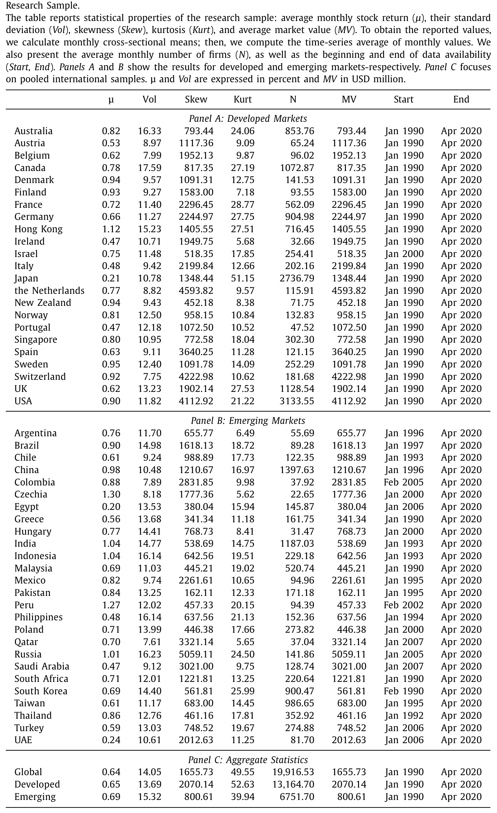
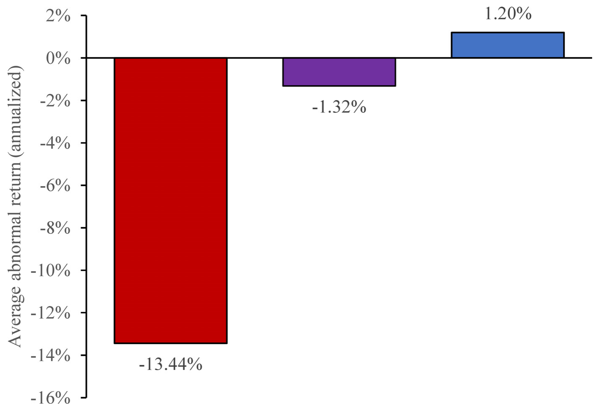
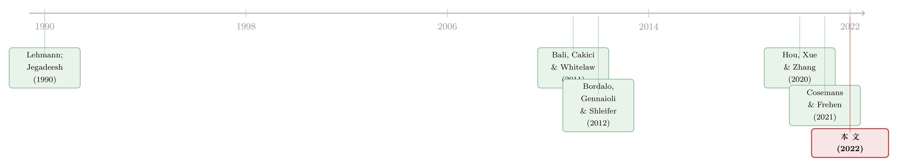

显著性异象的「微缩」真相：当一个全球溢价，只活在 3% 的市场角落里
本文读的是 Cakici & Zaremba (2022, Journal of Financial Economics)：把美国市场上新鲜出炉的「显著性理论（salience theory, ST）异象」搬到全球 49 个国家去检验，初看确实存在——高 ST 股票月均跑输低 ST 股票 0.34%，全球多空十分位组合的六因子 alpha 达 −0.66% 每月。但只要往里再看一层，这个看似全球普适的溢价几乎只栖息在占全球市值 3% 的「微盘股（microcaps）」里：在那里十分位多空策略的年化六因子 alpha 是惊人的 −13.44%，而在剩下 97% 的市值里，它根本不存在。
1 一个「看起来很美」的全球异象
先讲一个让人心动的故事。
2012 年，Bordalo、Gennaioli 和 Shleifer 三人提出了显著性理论（salience theory, ST）：人在做决策时，注意力会不由自主地被那些「最不寻常、最扎眼」的属性吸引——他们把这种属性叫做 salient（显著的）。一个直接的推论是，投资者会高估那些「跳出来」的回报，而低估那些平淡无奇的回报。如果一只股票在过去一段时间里，它最显眼的日子恰好是大涨的日子，那么投资者就会被这些上行的「高光时刻」吸引、对它过度乐观，把价格推高——而价格推高的代价，就是未来收益的回落。
这套逻辑听上去抽象，但 Cosemans 和 Frehen（2021）把它做成了一个可以直接放进横截面回归的变量，并在美国市场证明：它真的能预测股票收益，高 ST 公司显著跑输低 ST 公司。一个干净、漂亮、有行为学微观基础的新异象就此诞生。
接着，一个自然的问题是：这个在美国成立的故事，到了别的国家还成立吗？
这正是 Cakici 和 Zaremba 这篇论文要回答的事。他们做了第一个对 ST 异象的国际检验：49 个国家、三十年数据、76,972 只股票。而初步结果——确实令人鼓舞。
2 显著性，到底怎么度量
在讲结果之前，必须把这篇论文（以及它所依赖的 Cosemans-Frehen）赖以立足的那个度量讲清楚，否则后面的一切都是空中楼阁。
显著性理论的数学核心，是一个显著性函数（salience function）。对股票 \(i\) 在第 \(s\) 天的回报 \(r_{ist}\)，把它与当天市场上所有股票的平均回报（即「参照回报」\(r_{st}\)）作比较，显著性由下式衡量：
直觉是：一只股票某天的回报，越是偏离当天的大盘平均，它就越「显著」、越容易抢占投资者有限的注意力。这是显著性理论的第一块、也许是最本质的积木——它说的不是「涨得多就显眼」，而是「与众不同就显眼」。
有了每一天的显著性，再按显著性给各天的回报排序、赋予被扭曲的「决策权重」\(\omega_{ist}\)（显著的日子被高估、不显著的日子被低估）。最后，ST 度量被定义为这组权重与回报之间的协方差：
$$ ST_i = \mathrm{Cov}_s\!\left(\omega_{ist},\, r_{ist}\right) $$
这个协方差的符号，就是整篇论文的命门所在：
- 如果一只股票最显著的日子，恰好是它大涨的日子，那么权重与回报正相关，\(ST_i\) 为正——投资者的注意力被上行吸引，股票被高估，未来收益低；
- 反之，如果最显著的是大跌的日子，\(ST_i\) 为负——投资者被下行吓住、过度悲观，股票被低估，未来收益高。
所以理论预言的是一个负向关系：ST 越高，未来收益越低。这与彩票型股票（lottery stocks）的逻辑（Bali, Cakici & Whitelaw, 2011 的 MAX 效应）是一脉相承的——人们都愿意为「扎眼的上行」多付钱。
3 数据：把美国的故事搬到全世界
要做国际检验，数据是第一道关。作者用的是 Datastream，覆盖 23 个发达市场 + 26 个新兴市场，共 49 个国家，样本期为 1990 年 1 月至 2020 年 4 月，约三十年。清洗之后，整个股票池共 76,972 只股票（发达市场 51,404 只，新兴市场 25,568 只）。观测单位是「公司—月」。
作者下了相当大的功夫做数据质量过滤——只留普通股、只用主报价、剔除 ADR/权证/封闭式基金、按 Ince & Porter（2006）等一系列国际研究的标准筛掉异常回报、剔除每月股价最低的 10%。所有价格都按 Fama & French（2012, 2017）的惯例折成美元，无风险利率用一个月美国国债利率。
这套描述统计见表 1。值得一提的是，全球样本平均每月有近两万只股票，新兴市场的偏度、峰度都明显更极端——这为后文「特质风险高的国家异象更强」埋下了伏笔。

Table 1
但真正决定这篇论文走向的，是另一张「按规模分类」的表。作者沿用国际资产定价文献的惯例（如 Fama & French 2012, 2017; Hanauer 2020），不按 NYSE 断点、而按累计市值把股票分成三档：
- 大盘股（big）：占总市值最大的
90%； - 小盘股（small）：接下来的
7%； - 微盘股（micro）：剩下的
3%。
这个分类看似平淡，却藏着全篇最锋利的一刀。因为微盘股虽然只占全球市值的 3%，却包含了约 61% 的上市公司数量；它们的平均市值只有可怜的 84.4 百万美元。换句话说，全球绝大多数「公司」是微小的，而绝大多数「市值」集中在少数巨头身上。
4 反转：异象只活在 3% 的角落里
现在，把 ST 异象放进这个规模框架里——反转就出现了。
在全集（all firms）上，故事一切如常：全球多空十分位组合（买入 ST 最高的一档、卖空最低的一档）的六因子 alpha 是 −0.66% 每月，显著为负，与理论方向一致。如果你只看这个数字，会以为显著性异象是个稳健的全球现象。
但真正关键的一步，是把这 −0.66% 拆到三个规模档里去看。结果如图 1 所示：异象的全部火力，几乎都集中在微盘股里。

Figure 1: illustrates the first—and perhaps most essential— Both effects exhibit striking similarities in multiple do-
在微盘股里，等权十分位多空组合的年化六因子 alpha 高达 −13.44%（即每月 −1.12%）——这是一个大到不真实的数字。而在小盘股和大盘股里——它们合起来代表了全球 97% 的市值——多空组合的收益与零没有显著差别。
这就是作者所说的异象的「微观本性（micro nature）」。一个号称全球普适的资产定价规律，竟然只能在占市值 3%、平均市值不到一亿美元、机构投资者几乎无法有效交易的角落里被观测到。它「躺在了典型机构投资者的射程之外」。它的实际意义，用作者的话说，「即便不是可以忽略，也是边际性的」。
这一招——「把微盘股单拎出来，看异象还剩多少」——并不是这篇论文的发明，而是近年「异象复制」浪潮的标准动作（关于异象在套利与基本面之间如何消退，可参见《异象的消退，是被「套利」吃掉了，还是基本面自己缩水了？》）。Hou et al.（2020）正是用它把一大批「广为承认」的美国异象打回了原形。Cakici 和 Zaremba 把这把尺子第一次架到了显著性异象头上。
5 三道裂缝，而非一道
如果故事到此为止，那只是「又一个异象死于微盘股」。但这篇论文的扎实之处，在于它指出显著性异象的脆弱是三维的，而非一维。
第一道裂缝：横截面——前面已说的微盘本性。
第二道裂缝：时间序列——它只在极端市况下发作。 作者发现，ST 异象的超额收益被高「套利限制」放大：当市场整体流动性枯竭、票据利率与信用利差走高、经济不确定性飙升时，显著性策略的利润「高得惊人」；而在严重的下跌市与波动率尖峰之后，错误定价最集中。一旦回到「正常」时期，异象就黯淡下去。也就是说，这个溢价恰恰诞生在最难真正套利的时刻——这本身就让「能不能赚到」打上问号。
第三道裂缝：与短期反转高度同源。 显著性异象与短期反转（short-term reversal）效应（Lehmann 1990; Jegadeesh 1990）在多个维度上「惊人地相似」：时间序列动态、跨国异质性、甚至组合构成。更要命的是几个细节——
- 像反转一样，显著性异象在 1 个月的估计窗口里最强，一旦换成 3、6、12 个月的窗口就衰减甚至消失；
- 异象的相当一部分来自日内反转：一旦把估计期里「最后一天的回报」剔除掉，异象的幅度就明显减弱。
短期反转并没有把 ST 效应完全吃掉，但两者的纠缠是清清楚楚的——显著性异象的收益里，有相当一块其实是短期反转在「借壳」。
此外还有两个有意思的发现。其一，异象强烈依赖样本期：作者用一个长样本的美国数据回测，发现这个现象在更早的年代里曾经又稳又强，但近几十年明显衰减——到了最近 30 年，与显著性相关的超额收益只在「最小公司」这种最原始的形态里幸存。其二，异象有显著的跨国异质性，而驱动它的关键变量是特质风险（idiosyncratic risk）：特质波动率最高的那一档国家，显著性策略的利润比最低档国家高出 0.60%–0.79%。哪里特质风险大、套利最难，哪里异象就最猛——这又一次把矛头指向了套利限制。
6 文献脉络
把这篇论文放回它生长的那条藤蔓上，脉络其实很清晰。
源头是行为决策理论。早在 Bordalo、Gennaioli 和 Shleifer（2012）提出显著性理论之前，资产定价对「行为选择理论」的吸收，主要走的是前景理论（prospect theory，Benartzi & Thaler 1995; Barberis et al. 2001）和彩票偏好（Bali, Cakici & Whitelaw 2011 的 MAX 效应）这两条路（关于把前景理论真正「测」出来的尝试，可参见《用真金白银投出来的前景理论》）。显著性理论是这一谱系里较新的一支：它强调的不是概率的扭曲，而是注意力的扭曲。

接着，Cosemans 和 Frehen（2021）把这套理论落到了实证资产定价上，造出 ST 度量并在美国证明其预测力——这是这篇论文直接的「上游」。与此同时，资产定价的另一条暗线在悄悄改写游戏规则：以 Hou et al.（2020）为代表的「异象复制」运动，反复强调一旦认真控制微盘股，大量异象会蒸发；而短期反转（Lehmann 1990; Jegadeesh 1990）这个老牌效应，始终是任何「单月信号」绕不开的对照组。
Cakici 和 Zaremba（2022）正好站在这三条线的交汇处：拿着 Cosemans-Frehen 的度量，用 Hou et al. 的方法论，去问一个国际样本里的显著性溢价，到底有几分真。答案是：globally traceable，但 critically fragile。
7 评论与延伸（Q&A + 研究方向）
(a) 几个可能的疑问
Q：显著性异象，和彩票型股票（MAX 效应）到底是不是一回事？
不完全是，但血缘很近。MAX 看的是过去一个月里单日最高的几个回报，捕捉的是「极端上行」；ST 看的是回报相对当天大盘的显著性与决策权重的协方差，理论上更细。两者都来自「投资者为扎眼的上行多付钱」这一行为机制，因此在微盘股、彩票偏好强的市场里都最猛。本文的贡献之一，正是提醒你别把 ST 当成一个全新的、独立的定价源。
Q：六因子 alpha 是哪六个因子？为什么用它？
用的是 Fama & French（2012）的国际六因子框架（市场、规模、价值、盈利、投资、动量一类的国际版构造）。选它是为了让国际多空组合的超额收益在剥离了已知风格暴露后仍然「站得住」——而结果是，在大盘股里剥离之后，alpha 就归零了。
Q：把异象归到微盘股，是不是一种「赖账」？毕竟微盘股也是真实存在的股票。
这是个公允的质疑。微盘股确实是真股票，理论上也该被定价。但作者的论点不是「微盘股不算数」，而是「一个只在 3% 市值、61% 公司数、平均市值不到一亿美元的角落里存在的溢价，其经济意义和可交易性都极其有限」。当交易成本、流动性冲击、容量限制叠加上去，纸面上的
−13.44%年化 alpha 很可能根本无法兑现。
Q：剔除「最后一天回报」就让异象减弱，这说明了什么？
说明异象里掺了大量日内/隔日反转的成分。短期反转的一个已知来源就是买卖价差的回弹（bid-ask bounce）和流动性提供的补偿。把最后一天拿掉，等于把反转最集中的部分抽走，异象随之缩水——这强烈暗示 ST 的一部分「预测力」其实是反转的微观结构效应在伪装。
Q：「特质风险高的国家异象更强」，是机制证据还是又一个套利限制故事？
更像后者。特质风险高意味着套利者对冲残差风险的成本更高、能押的头寸更小，错误定价更难被纠正。所以「高特质风险 → 强异象」并不直接支持「显著性是基本面风险溢价」，反而支持「这是个被套利限制撑住的错误定价」。这对想把 ST 当作风险因子来用的人是个警告。
Q：那显著性理论本身被证伪了吗？
没有。本文证伪的是「显著性异象是一个稳健、可交易、全球普适的资产定价规律」这个实证主张，而不是「投资者会被显著属性吸引」这个行为机制。机制也许是真的，但它在真实市场里留下的可交易痕迹，远比初看时微弱。
(b) 几个可能的研究问题与提案
1. 把显著性度量搬进公司债市场。 【经济故事】债券投资者同样有有限注意力，而信用债的「显著日子」——评级下调、违约新闻、利差骤变——可能比股票更扎眼、更易被过度反应。一个 ST 类度量能否预测公司债的横截面收益？ 【可行性】中。需要 TRACE 的日频债券回报（噪声大、非同步交易严重），识别上要小心把 ST 与已知的信用反转、流动性溢价分开。日频债券回报质量是最大障碍。
2. 显著性异象与外资持有人。 【经济故事】如果显著性异象由「注意力被上行吸引」驱动，那么投资者结构应当重要。外资往往只盯大盘、蓝筹与「上头条」的名字，本地散户才在微盘股里翻找彩票。能否用外资持股比例作为横截面调节变量，检验异象是否在外资低、本地散户高的股票里更强？ 【可行性】中。需要 FactSet/13F 一类的持股数据 + 本文的国际 ST 度量。识别靠交互项，难点是持股数据在新兴市场微盘股上的覆盖度。
3. 把「样本期衰减」做成一个正式的时变检验。 【经济故事】本文已观察到 ST 异象在近 30 年衰减。这究竟是套利资本进场（流动性改善吃掉了异象），还是市场结构变化？ 【可行性】高。用滚动窗口 alpha + 交易活跃度/流动性指标做时序回归即可，数据现成（关于异象随高流动性时代的整体衰减，可对照《买卖双方各执一词：当 193 个异象告诉你「谁是聪明钱」》的思路）。
4. 用真实交易成本给 ST 策略「算总账」。
【经济故事】纸面 −13.44% 的微盘 alpha，扣掉价差、冲击成本、容量约束后还剩多少？这正是「异象在现实约束下能否复制」的核心问题。
【可行性】高。本文已搭好组合，只需叠加各国微盘股的有效价差与冲击成本模型（如 size-adapted 流动性度量），输出净 alpha 曲线。
我的判断
这篇论文的贡献，不在于发现了什么新东西，而在于及时地、系统地给一个正在走红的新异象「降温」。它做了第一个国际检验，本可以顺水推舟地宣布「显著性溢价全球成立」，多发几篇后续；但作者偏偏沿着「规模—时间—相邻异象」三条线把它拆开，诚实地告诉你：这个溢价 globally traceable，却 critically fragile——它栖息在小公司、高风险国家、极端市况这三个最难真正交易的地方。这种「证伪式的复制」工作，恰恰是当下因子动物园（factor zoo）最需要、却最稀缺的。
对识别的担忧，我有两点。其一，本文与短期反转的「切割」做得还不够干净——它证明了反转不能完全吸收 ST，却没有给出一个能把两者正交分解、并各自定价的结构。读者只能得到「它们高度同源」的定性结论，而无法知道剔除反转后纯粹的「显著性成分」是否还有独立的、哪怕微弱的定价力。其二，所有结论都建立在 Datastream 国际数据之上，而微盘股恰是这类数据库错误最集中、回测最容易被脏数据污染的地带——作者做了大量过滤，但「−13.44% 的年化 alpha」本身就大到让人怀疑里面有多少是数据噪声、多少是真实的错误定价。
后续我最想看到的，是把这套检验接到有真实微观结构与交易成本的市场上：给微盘股的 ST 策略算一笔扣费后的净账。如果一个异象的全部生命力都来自最贵、最难交易的角落，那么「它存在吗」这个问题，也许真的不如「净下来还剩几个基点」来得重要。
参考文献
- Bordalo, P., Gennaioli, N., Shleifer, A. (2012). Salience theory of choice under risk. Quarterly Journal of Economics 127(3), 1243–1285.
- Bordalo, P., Gennaioli, N., Shleifer, A. (2013b). Salience and consumer choice. Journal of Political Economy 121, 803–843.
- Cosemans, M., Frehen, R. (2021). Salience theory and stock prices: empirical evidence. Journal of Financial Economics.
- Cakici, N., Zaremba, A. (2022). Salience theory and the cross-section of stock returns: international and further evidence. Journal of Financial Economics 146(2), 689–725.
- Bali, T.G., Cakici, N., Whitelaw, R.F. (2011). Maxing out: stocks as lotteries and the cross-section of expected returns. Journal of Financial Economics 99(2), 427–446.
- Fama, E.F., French, K.R. (2012). Size, value, and momentum in international stock returns. Journal of Financial Economics 105(3), 457–472.
- Hou, K., Xue, C., Zhang, L. (2020). Replicating anomalies. Review of Financial Studies 33(5), 2019–2133.
- Lehmann, B.N. (1990). Fads, martingales, and market efficiency. Quarterly Journal of Economics 105(1), 1–28.
- Jegadeesh, N. (1990). Evidence of predictable behavior of security returns. Journal of Finance 45(3), 881–898.